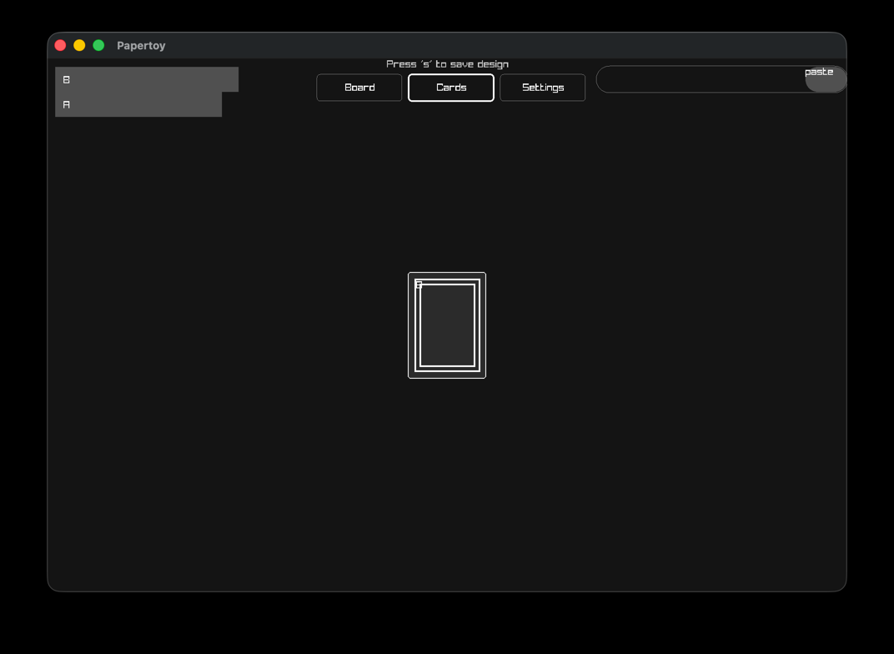
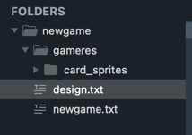
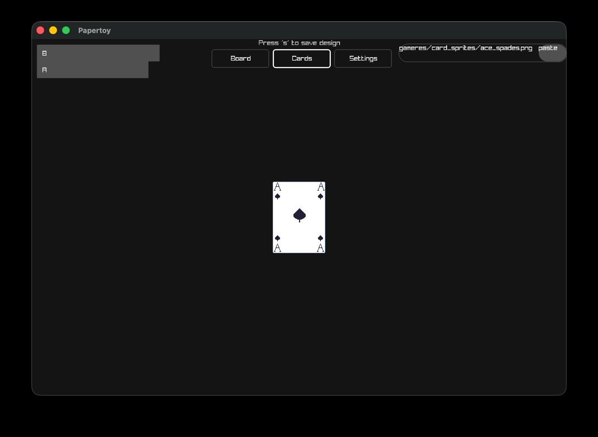
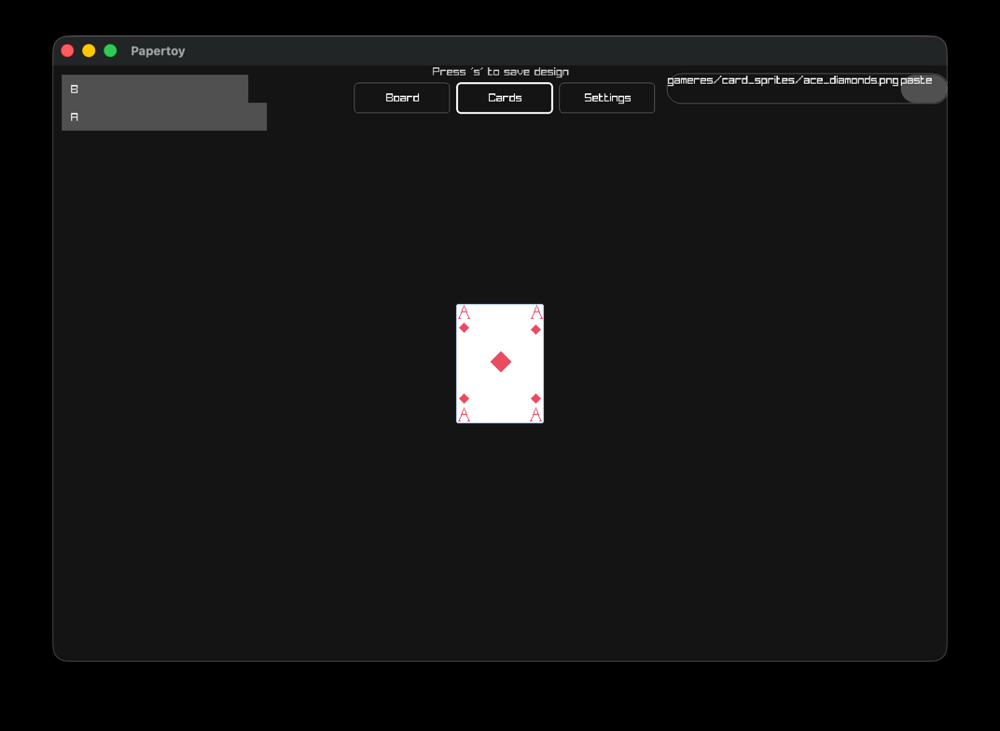
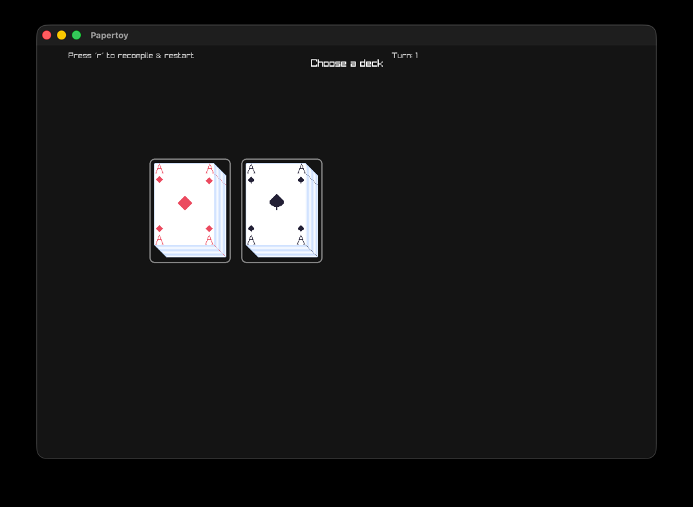
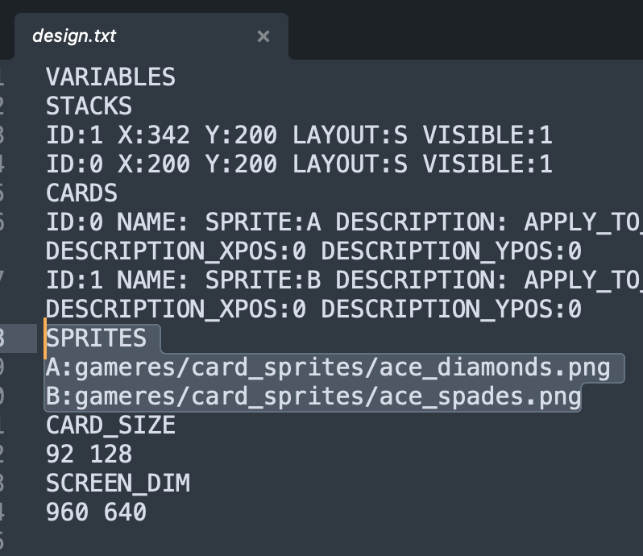
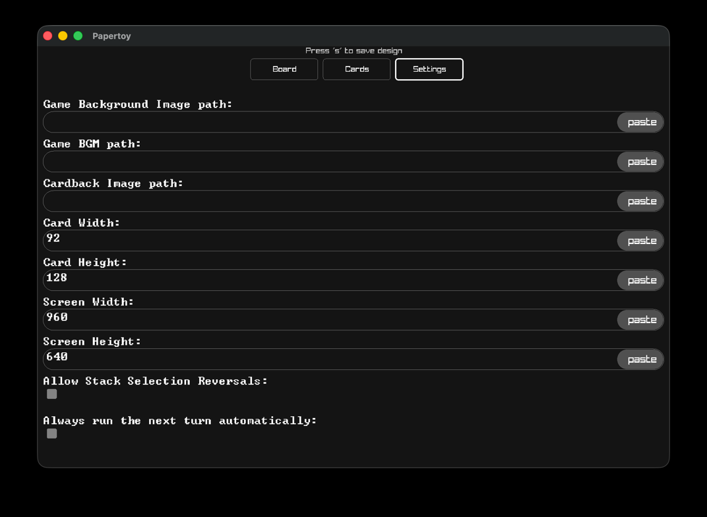

Once you load up a project, you can view it's design by selecting 'Design' from the main menu.
You can access the main menu at any time by pressing the 'esc' key on your keyboard.
Here we can see the design for the 'newgame' project we created in the Creating a new project section.

We can see the stacks we created 'a' and 'b' both on the board, and in the top left of the screen.
We can click and drag the stacks around to change their position.
We can change a few settings for how each stack is displayed with the panel in the top right (you must have a stack selected for the top-right panel to show)
You will notice the toolbar at the top has the 'Board' tool highlighted. This means you're looking at the Board design.
To save any changes, hit the 's' key on your keyboard
Now click on 'Cards'

Here on the left, we can see a list of the cards that exist in our game. Click on one of those cards and you will see a placeholder image for that card
These look pretty boring right now, lets change that. on the top right there's a box where you can paste a path to an image file for the card you curretly have selected
Papertoy comes with some free assets for you to use. Look in the Papertoy installation folder, and navigate to startergame/gameres/card_sprites the card_sprites folder contains images of all 52 playing cards
Copy the gameres folder and paste it alongside you code & design file

Copy the text gameres/card_sprites/ace_spades.png and click the paste button.

Next select the other card and copy the text gameres/card_sprites/ace_diamonds.png and click the paste button

Now press 's' to save the changes, hit the 'esc' key and select 'game'

When you hit the 's' key to save the design, the changes got written to the design.txt file that was created when we loaded our project for the first time. The design.txt file is human readable. So if you find the editiing process awkward, feel free to edit the design file directly, instead of using the designer.

Notice the highlighted SPRITES section, this is where we put our sprites, the format is SPRITE_NAME:PATH, the designer automatically sets the name to the name of the corresponding card.

Here we can customise the look of our game by setting:
There are also some gameplay options available to us:
Sometimes, when a player selects an option a secondary choice follows. For instance right now in our test game, if you select a stack to move a card from, before you select a stack to move the card to, you can un-select it by right-clicking. Sometimes this behaviour isn't desierable, so we can turn it off here.
By default, papertoy will run to the next turn if there are no actions for the player to take. Sometimes we want the player to be able to go to the next turn when they are ready. Unselecting 'Always run the next turn automatically' will make it so a player has to click a 'Next Turn' button, before the next turn runs.
Feel free to play around with these settings. Remember to save your changes to the design file by pressing 's' while on ANY design screen (board, cards, settings). Also, check out the design file after you've changed a setting to see how it's changed. Remember you can always make manual changes to the design file.
Next let's check out the language guide